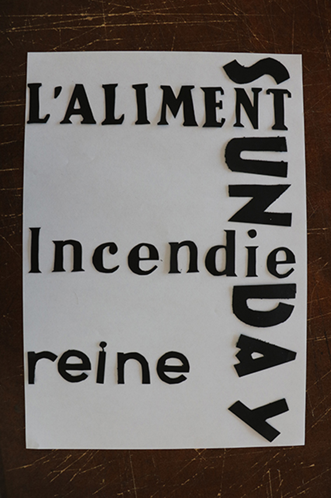
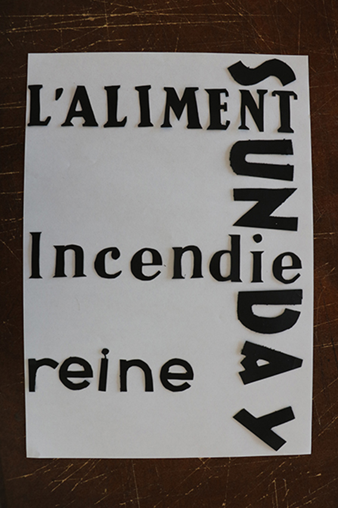

spécimen
overpass est un caractère numérique, étroitement lié à la série FHWA Highway Gothic fonts, un alphabet de signalisation tiré pour la signalétique de la route des États-Unis en 1949 . le but était de créer une présentation optimale à des tailles plus petites à l’écran et plus tard pour les tailles d’affichage - en particulier dans les poids plus légers.